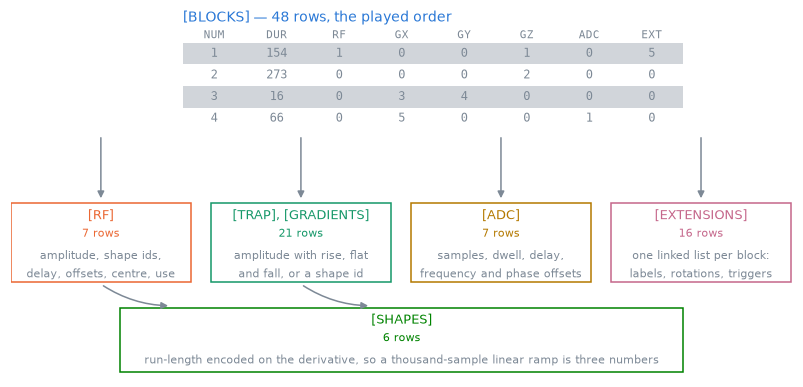

Pulseq file format#
TL;DR
A
.seqfile is a flat list of blocks indexing shared event and shape libraries, every time on one of four rasters.pypulseqpp reads, deduplicates, signs and writes it, in text and binary, as Pulseq 1.5.1 or 1.4.1.
Repetitions and shots are not stored in the file; pypulseqpp derives them from the block table.
A scanner plays a .seq file block after block, so everything you design has
to end up as a table of blocks, the events they play and the shapes those
events sample. pypulseqpp keeps that table and the libraries behind it, so
that the file you write is the one MATLAB Pulseq would write, and a file you
read is the one you can analyse. Every event time also has to fall on a raster
the scanner can address, which the timing check verifies.
Capabilities#
Writes a flattened schedule of blocks, each at most one event per channel, played concurrently and back to back.
Show code and tests
Code:
Sequence,add_block(),write(). Tests: a file is written back as it was read; writing a file twice writes the same bytes; the written file is byte identical to the reference (test_corpus.py,test_parity.py).Stores each distinct event once and refers to it by 1-based id, so an event played ten thousand times is one row.
Show code and tests
Code:
SequenceLibraries,Shape. Tests: every gradient id is one trapezoid or one arbitrary gradient; the libraries come back the size they went in (test_libraries.py,test_read.py).Splits every event into a definition and its instances, so a phase-encode table is one definition at many amplitudes.
Show code and tests
Code:
RfInstances,RfDefinition. Tests: a phase encode table is one definition at many amplitudes; gradients differing only in amplitude share a definition; arbitrary gradients of different lengths are different definitions (test_repetition.py,test_libraries.py).Merges equal shapes and events when writing, on a copy, and renumbers the blocks.
Show code and tests
Code:
remove_duplicates(),write(). Tests: writing collapses duplicates without touching the sequence; collapsing duplicates twice changes nothing the second time; collapsing duplicates merges the roles of the shapes it merges (test_facade.py,test_structure.py,test_shape.py).Finds the repetition from the block table, or takes the declared
TRSize.Show code and tests
Code:
repetition(). Tests: a phase encode does not make a shot different; blocks played once before the loop make the whole sequence one; a declared hyper TR the blocks repeat with is taken (test_repetition.py).Writes one
ROTATIONSrow per orientation instead of a rotated copy of every waveform.Show code and tests
Code:
make_rotation(). Tests: turning by extension plays what turning the events plays; a turned sequence survives a file; the file is the one the toolbox writes (test_rotation_extension.py).Writes labels as sticky
LABELSET/LABELINCrows, and evaluates their running values.Show code and tests
Code:
make_label(),evaluate_labels(). Tests: a label is recorded where it is asked for; a custom label comes back by its name (test_evaluate_labels.py,test_labels.py).Carries triggers, RF shims and soft delays as extensions.
Show code and tests
Code:
make_trigger(),make_rf_shim(),make_soft_delay(). Tests: an extended sequence survives the text form; an extended sequence survives the binary form (test_binary.py).Reads text and binary files, including Pulseq 1.2 to 1.4, into the same sequence.
Show code and tests
Code:
read(),pypulseqpp.io.read(),pypulseqpp.io.read_chain(). Tests: a file survives the binary form; an older file holds the events the 1 5 file holds; a chain is read in play order each file on its own system (test_corpus.py,test_io.py).Writes the binary form, with an optional MD5 signature in either form.
Show code and tests
Code:
write_binary(). Tests: a written file carries the signature it reports; a patched file is refused; a shape comes back within a single precision sample (test_binary_signature.py,test_binary.py).Writes Pulseq 1.4.1 on request, folding ppm offsets and refusing what it cannot express.
Show code and tests
Code:
write_v141(). Tests: a rotating sequence is refused rather than flattened; a ppm offset becomes the hertz it stands for; a soft delay is left out with a warning (test_v141.py).Builds the system from a file’s rasters and stated limits, or keeps the one you constructed.
Show code and tests
Code:
pypulseqpp.io.read(),read(). Tests: the rasters of the system built are the ones the file carries; a limit passed in wins over the one the file would give (test_io.py).Reports every event time off its raster, and the dead, ringdown and duration conditions.
Show code and tests
Code:
check_timing(). Tests: a ramp between two gradient ticks is reported; a dwell between two ADC ticks is reported; a pulse starting inside the RF dead time is reported; a gradient left on before the block ends is reported (test_check_timing.py).Finds the shortest dwell on both the ADC and gradient rasters, and reports the bandwidth achieved.
Show code and tests
Code:
calc_adc_timing(),round_to_raster(),ceil_to_raster(). Test: the ADC lands on both rasters at once (test_pypulseq_base_factories.py).
Division of responsibility#
MATLAB Pulseq defines the format.
pypulseq-matlab-like, a transcription of it, is the authority for the file; the written bytes are held to it, with deduplication on and off.PyPulseq defines the Python vocabulary. Signatures and event conventions are preserved; not every upstream feature is implemented.
Neither records repetitions, shots or limits beyond the rasters. The file is a playout order and nothing above it.
Method#

The block table of a written eight-line gradient-echo file, the libraries its cells index, and the shape library the RF and gradient rows index in turn. Each library holds one row per distinct event, however many blocks play it, so the tables below the block table are far shorter than it is.#
Block timing#
Two rules fix the timing: the events of a block start together, each after its
own delay, and blocks follow one another with no gap. A block lasts at least as
long as its events and may last longer; the excess is a delay, which is how an
echo time or a repetition time is written. Amplitudes are in Hz and Hz/m, so
the file does not depend on the nucleus; gamma of Opts
enters only where a physical amplitude is needed.
Derived structure#
A phase encode changes an instance and not its definition, so the lines of a
Cartesian scan are one repetition. That is what repetition()
reads, and what the SAR check of Safety checks averages over. The same
split lets one interleaf serve every shot of a radial or spiral scan: the shape
library stays the size of one repetition, and an analysis of played gradients
applies each block’s rotation first.
Raster timing#
Every time is a multiple of one of four rasters: RF, gradient, ADC and block duration. The ADC window has to end on the gradient raster and its dwell on the ADC raster, so the sample count limits the receiver bandwidth: at the default rasters, 128 samples admit at most 100 kHz and 100 samples admit 500 kHz.
The rules, formats and formulas are in Pulseq file format internals; the stored layout of the libraries in the C++ core is in C++ core.
Examples#
1. Your first gradient echo: the first sequence, written and read back.
2. Echo and repetition time: echo and repetition times as block durations.
4. Labels and metadata: labels and definitions.
7. Hardware and safety checks:
check_timingon a finished sequence.Sequence and system limits, Reading and writing files and Timing and rasterization: the container, the readers and writers, and the timing helpers.